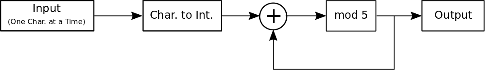

The goal of these notes is to serve as a record of my own understanding of crypto currencies and related concepts. I find writing formal notes forces me to confront gaps in my understanding. Also I personally do not invest in crypto currencies as I cannot afford to lose the money and I do not suggest that anyone else should except for educational purposes. What interests me about crypto currencies is not so much their value but their relative success as persistent distributed applications. These notes no doubt reflect this interest.
I had also hoped that GitHub Pages had some great whizzbang plug and play templates which would make my notes look pro! Not so much, so bear with me as I refine there presentation.
An example of a simple hash function is,

Assuming the input message is a string of alphabetic characters this simple hash function outputs an integer between 0 and 4. So if we input messages ALICE and BOB into this hash function we get hashes 0 and 4 as shown in the table below.
| Input | Current Char. | Char. to Dec. | (+) | mod 5 | Output |
|---|---|---|---|---|---|
| None | None | None | None | None | None |
| ALICE | A | 1 | 1 | 1 | |
| L | 12 | 13 | 3 | ||
| I | 9 | 12 | 2 | ||
| C | 3 | 5 | 0 | ||
| E | 5 | 10 | 0 | 0 | |
| BOB | B | 2 | 2 | 2 | |
| O | 15 | 17 | 2 | ||
| B | 2 | 4 | 4 | 4 |
Notation: (+) denotes addition, mod denotes the modulo operation
Source: en.wikipedia.org/wiki/Hash_function